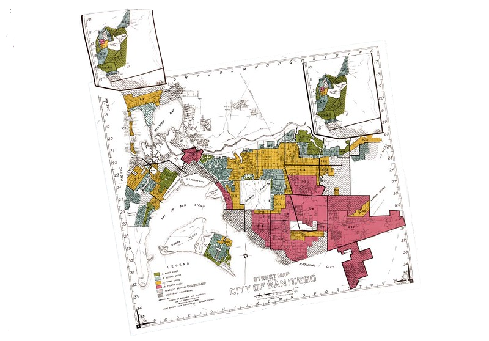

Redlining & Economic Opportunity
HISTORICAL DATA · SOCIOECONOMIC ANALYSIS
This analysis examines six San Diego neighborhoods that received federal
HOLC grades ranging from A through D in 1936. Nearly ninety years later,
differences in homeownership, property values, and neighborhood demographics
were explored across these historical graded areas.
Introduction
Between 1935 and 1940, the Home Owners' Loan
Corporation (HOLC) sent assessors into American cities to grade
neighborhoods on their "mortgage security." The resulting maps
graded each district A ("Best") through D ("Hazardous"), and for
decades afterward, banks used those grades to decide where
mortgages were worth the risk.
The grades were rarely about the condition of the housing stock
alone. Assessors routinely weighed the race and national origin
of a neighborhood's residents as a factor in its "risk," and
majority-white professional districts were graded favorably
almost by default. The practice, now known as redlining, steered
decades of investment toward some San Diego neighborhoods and
away from others.
This analysis follows six San Diego districts from their original
1936 HOLC grade through to 2024 by comparing the assessors' own
language with present-day homeownership data. The history of
well documented redlining raises questions: how much of the 1936
map remains legible in the city today and where has the picture
genuinely changed.
San Diego in 1936
Data & Methodology: Historical HOLC data were collected from Digital Scholarship
Lab at the University of Richmond. Modern ZIP code and neighborhood matches are estimates. They are based on
geographic overlap between the original HOLC-grade area and present day ZIP code boundaries.

A — Best
B — Still Desirable
C — Definitely Declining
D — Hazardous
1936 HOLC Map
Green and blue districts (A/B) clustered along the coast and in established
professional neighborhoods; yellow and red districts (C/D)
covered older, denser, and more racially mixed parts of the city.
HOLC Assessments
| District |
Race (as recorded) |
Class |
Material / Risk |
| A4 · La Jolla Hermosa (92037) |
Restricted to caucasian race |
Professional & retired businessmen |
Large lots; ocean/foothill view; street improvements paid |
| B21 · Kensington (92116) |
Practically 100% white; few Spanish families of high social strata |
Retired, professional & businessmen |
Access to park, library, markets & transit; bond "not a detriment" |
| C9 · Central San Diego (92103) |
No immediate threat of foreign infiltration |
White-collar & professional |
Apartment/rooming houses; "cheap improvements," declining |
| C13 · Brooklyn Heights (92104) |
Better class Mexicans coming in |
White-collar & skilled workers |
Apartments & multiple dwellings; residential "decline" |
| D2 · Old Town (92110) |
No race specified |
Lower social strata |
Older/low-value homes; no tax problems; "extremely hazardous for loans" |
| D10 · Encanto (92114) |
Mostly whites & Mexicans |
Lower salaried class |
Inexpensive lots; heavy Mattoon Assessment; lenders consider area hazardous |
Race, class, and material/risk columns are drawn directly from the original 1936 HOLC
"area description" forms, including their language.
Income & Class
Reporting income generally declines with HOLC grade. A4 had the highest recorded range at $5,000 - $25,000 compared with
$0 - $1,000 in D2. The C-grade district fell between these extremes. No numerical income range was found for D10 since
HOLC described the district only as "lower salaried" with "small earning capacity." This shows
the economic dimension of the assessments rather than race directly.
Material/Housing Quality reflects how well-built and maintained the housing stock was. Amenities & Accessibility captures access
to parks, transit, schools, and shopping. Higher HOLC grades align with stronger conditions and greater access just as lower grades align with weaker conditions.
This chart focuses on physical infrastructure and does not capture the racial factors also considered in HOLC assessments.
San Diego in 2024
Data & Methodology: Present-day demographic data were obtained from
the National Community Reinvestment Coalition (NCRC). After creating an account, the
relevant San Diego data sets were extracted, cleaned, and analyzed in Rstudio. Selected
demographic and socioeconomic measures were then organized to allow consistent comparison
across the six study areas and with the historical 1936 data.
Racial composition has changed substantially since 1936; however, the pattern is uneven across the six areas.
A4, once described as "restricted to caucasian race," remains the area with the highest white share and lowest
black share. By contrast, C13 and D10 show considerably greater racial diversity today. Notably, D10 is now the
most diverse of the six areas. The comparison shows that racial composition has changed across all six areas.
Each changed at different rates and to different degrees.
Educational attainment does not follow the 1936 HOLC grades as other measurements. A4 has the highest share (77%) of residents with
a bachelor's degree or more, D10 has the lowest share (22%) without a high school diploma. The remaining areas cluster more closely
together with notably C9 exceeding B21 in bachelor's attainment. The other five areas show less variation in educational attainment and
do not consistently follow their historical HOLC grades. D10 stands out most clearly with substantially lower bachelor's attainment and
higher rates of residents without a high school diploma.
Homeownership does not follow the historical HOLC grade pattern. For instance, dispite receiving a grade D in 1936, D10
has the highest ownership rate today and then A4 follows. The remaining areas cluster at lower rates across different
HOLC grades. This contrasts with the pattern seen in other measures and suggests that historical HOLC grade alone
does not explain present-day homeownership.
A4 stands apart from the other five areas because it combines higher houshold income and home values
with relatively high homeownership. The remaining areas cluster more closely in income and home
value but vary considerably in homeownership. D10 shows the opposite pattern because it pairs teh lowest
home value with the highest rate of homeownership. This shows that high homeownership does not always
conclude with higher income or property values.
Race & Economic Opportunity
Since 1936, racial composition has become more diverse across the six areas but economic differences remain.
Income and home values continue to vary substantially between the study areas. This shows that demographic
change has not necessarily been acompanied by equal economic outcomes.
Persistence
The only Grade A area that continues to stand apart economically since 2024 is A4.
Its household income is 46% above the six area average, about $39,000 higher, and
its home value are more than $1 million above the average. This suggests that the
area graded "Best" in 1936 remains one of the most economically advantaged
among the six areas today.
Change
Homeownership declied substantially in all three areas with historical comparison data.
A4, B21, and C13 each had much higher owner-occupation in 1936. By 2024, the difference
between several of teh study areas had narrowed considerably. Data was not collected for
C9, D2, D10; therefore, historical changes could not be measured for those areas. Unlike
income and home values, homeownership shows substantial change over time rather than a
clear pattern of persistence.
Conclusion
The comparison between 1936 HOLC assessments and present-day conditions show a combination of
persistence and change. The only Grade A area in the study (A4) continued to stand apart in household
income and home value. By contrast, other measures such as education and homeownership, do not
consistently follow the historical HOLC grade pattern.
At the same time, the six areas have experienced substantial demographic and economic change.
Racial composition is more diverse and historical differences in ownership have narrowed among
the areas with available comparison data. Further, D10 demonstrates that a former Grade D area
can have teh highest homeownership rate today. Overall, the findings suggest that HOLC grades
remain relevant to understand some present-day inequalities but they do not explain every
outcome observed across these neighborhoods.
Tools & Skills
RStudio
Data Extraction
Data Cleaning
Geographic Matching
Comparative Analysis
Socioeconomic Data Analysis
Historical Research
Data Visualization